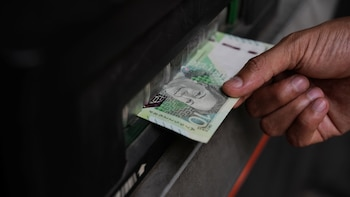

El colesterol alto silencioso sigue siendo uno de los mayores desafios para la salud publica a nivel global y local. Implementar cambios fundamentados en la ciencia medica y la tradicion nutricional es clave para recuperar el equilibrio cardiovascular.
Durante los ultimos reportes medicos emitidos en el Peru entre el 19 y 20 de septiembre de 2026, el Ministerio de Salud (MINSA) ha enfatizado la urgencia de prevenir las enfermedades coronarias mediante la modificacion temprana del estilo de vida. Con cifras alarmantes de trigliceridos y colesterol LDL en adultos jovenes, la prevencion natural se ha convertido en la mejor arma de defensa medica.
Alerta Sanitaria en el Peru (Septiembre 2026)
Informes recientes de EsSalud revelan que mas del 40% de la poblacion urbana adulta presenta niveles alterados de lipoproteinas de baja densidad (colesterol malo). Los especialistas recuerdan que los remedios caseros y la alimentacion funcional son pilares ineludibles antes de recurrir a la farmacologia permanente.
Los 7 trucos caseros y habitos naturales comprobados
Combatir la hipercolesterolemia no requiere necesariamente de formulas magicas o costosos suplementos importados. La naturaleza y la disciplina diaria ofrecen soluciones de eficacia contrastada por la cardiologia moderna.
- 1. Aumenta la ingesta de fibra soluble con avena y legumbres: La fibra viscosa atrapa el colesterol en el tracto digestivo y facilita su eliminacion antes de que llegue al torrente sanguineo. Consumir medio plato de lentejas o un tazon de avena integral diariamente reduce de forma notable el LDL.
- 2. Incorpora esteroles y estanoles vegetales: Estas sustancias se encuentran de manera natural en frutas, verduras, frutos secos y semillas. Bloquean eficazmente la absorcion intestinal del colesterol proveniente de otros alimentos.
- 3. Prioriza las grasas monoinsaturadas del aceite de oliva y aguacate: Sustituir las grasas saturadas de origen animal por aceite de oliva virgen extra mejora la calidad del colesterol HDL (el bueno) y protege las paredes arteriales de la inflamacion cronica.
- 4. El poder del te verde y la infinidad de antioxidantes: Las catequinas presentes en el te verde ayudan a disminuir los niveles totales de colesterol y trigliceridos. Tomar dos tazas al dia sin azucar anadida potencia el metabolismo lipidico.
- 5. Realiza caminatas aerobicas constantes (Minimo 30 minutos): El ejercicio cardiovascular incrementa la enzima lipoproteina lipasa, encargada de movilizar las grasas acumuladas. El sedentarismo es el principal catalizador del colesterol elevado en las grandes ciudades peruanas.
- 6. Controla el consumo de azucares refinados y harinas blancas: Existe un mito frecuente que culpa exclusivamente a las grasas. Sin embargo, el exceso de carbohidratos simples en la dieta se convierte hepaticamente en trigliceridos, empeorando el perfil lipidico global.
- 7. Apóyate en el ajo crudo y compuestos aliaceos: El consumo regular de ajo crudo machacado ayuda a regular la presion arterial y disminuye la sintesis hepatica de colesterol gracias a la alicina, un compuesto bioactivo altamente potente.
El enfoque integral: Mas alla de la cocina
Ningun truco casero funcionara de manera aislada si se mantiene un nivel de estrés elevado o un descanso deficiente. El cortisol, conocido como la hormona del estres, altera los procesos metabolicos del higado, propiciando la acumulacion de colesterol nocivo en la sangre.

Los expertos recomiendan realizarse un perfil lipidico completo al menos una vez al año. La combinacion de estos siete trucos caseros con la supervision de un profesional de la salud garantiza no solo una reduccion efectiva del colesterol alto, sino una mejora sustancial en la esperanza y calidad de vida.